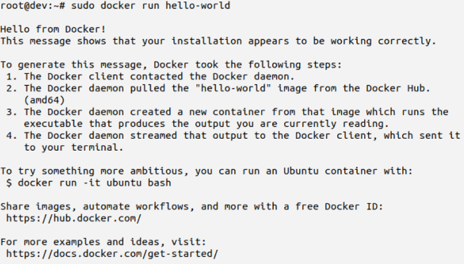
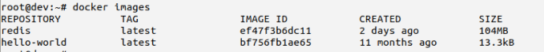
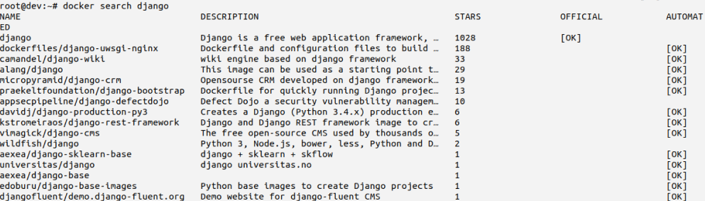

# Docker 概述
Docker是一个开源的应用容器引擎，基于Go语言并遵从 Apache2.0 协议开源。
Docker可以让开发者打包他们的应用以及依赖包到一个轻量级、可移植的容器中，然后发布到任何流行的 Linux 机器上，也可以实现虚拟化。容器是完全使用
沙箱机制，相互之间不会有任何接口（类似 iPhone 的 app）, 更重要的是容器性能开销极低。
# Docker 应用场景
Web应用的自动化打包和发布。自动化测试和持续集成、发布。
在服务型环境中部署和调整数据库或其他的后台应用。
从头编译或者扩展现有的
OpenShift或Cloud Foundry平台来搭建自己的PaaS环境
# Docker 的优点
Docker是一个用于开发，交付和运行应用程序的开放平台。Docker 使您能够将应用程序与基础架构分开，从而可以快速交付软件。借助 Docker，您可以与管理应用程序相同的方式来管理基础架构。通过利用 Docker 的方法来快速交付，测试和部署代码，您可以大大减少编写代码和在生产环境中运行代码之间的延迟。
# 在 Ubuntu 中安装 Docker
- 更新 ubuntu 的 apt 源索引
sudo apt-get update |
- 安装包允许 apt 通过 HTTPS 使用仓库
sudo apt-get install \ | |
apt-transport-https \ | |
ca-certificates \ | |
curl \ | |
software-properties-common |
- 添加 Docker 官方 GPG key
curl -fsSL https://download.docker.com/linux/ubuntu/gpg | sudo apt-key add - |
- 设置 Docker 稳定版仓库
sudo add-apt-repository \
"deb [arch=amd64] https://download.docker.com/linux/ubuntu \
$(lsb_release -cs) \
stable"
- 添加仓库后，更新 apt 源索引
sudo apt-get update |
- 安装最新版 Docker CE（社区版）
sudo apt-get install docker-ce |
- 检查 Docker CE 是否安装正确
sudo docker run hello-world |
- 出现如下信息，表示安装成功

# Docker 使用
# 启动 docker | |
sudo service docker start | |
# 停止 docker | |
sudo service docker stop | |
# 重启 docker | |
sudo service docker restart |
# 容器使用
- 启动容器
参数说明
-i: 交互式操作
-t: 终端
redis:redis 镜像
docker run -it redis |
- 停止一个容器
docker stop <容器 ID> |
- 重启，停止的容器
docker restart <容器 ID> |
- 进入容器
- 在使用
-d参数时，容器启动后会进入后台。此时想要进入容器，可以通过以下指令进入
docker attach <容器 ID> | |
docker exec -it <容器 ID> # 推荐大家使用 docker exec 命令，因为此退出容器终端，不会导致容器的停止。 |
- kill 掉一个已经在运行的容器
docker kill <容器 ID> |
- 清理掉所有处于终止状态的容器
docker container prune
- 删除容器
docker rm -f <容器 ID> |
# 镜像使用
- 列出镜像
docker images |
各个选项说明
REPOSITORY：镜像所在的仓库名称
TAG：镜像标签
IMAGEID：镜像 ID
CREATED：镜像的创建日期 (不是获取该镜像的日期)
SIZE：镜像大小

- 搜索镜像
docker search redis |
各项说明
NAME: 镜像仓库源的名称
DESCRIPTION: 镜像的描述
OFFICIAL: 是否 docker 官方发布
START: 类似 Github 里面的 star，表示点赞、喜欢的意思。
AUTOMATED: 自动构建。

- 拉取镜像
Docker 维护了镜像仓库，分为共有和私有两种，共有的官方仓库 Docker Hub (https://hub.docker.com/) 是最重要最常用的镜像仓库。私有仓库（Private Registry）是开发者或者企业自建的镜像存储库，通常用来保存企业 内部的 Docker 镜像，用于内部开发流程和产品的发布、版本控制。
docker pull django |
- 删除镜像
docker image rm 镜像名或镜像id |
- 镜像备份与迁移
docker save -o ./ubuntu.tar ubuntu # 镜像打包成文件 | |
docker load -i ./ubuntu.tar # 将镜像加载到本地 |
# 仓库管理
仓库（Repository）是集中存放镜像的地方。以下介绍一下 Docker Hub。当然不止 Docker hub，只是远程的服务商不一样，操作都是一样的。
# Docker Hub
目前 Docker 官方维护了一个公共仓库 Docker Hub。
大部分需求都可以通过在 Docker Hub 中直接下载镜像来实现。
# 注册
在 https://hub.docker.com 免费注册一个 Docker 账号。
- 登录
docker login |
- 退出
docker logout |
- 可以通过 docker search 命令来查找官方仓库中的镜像，并利用 docker pull 命令来将它下载到本地。
- 以 Mysql 为关键词进行搜索
docker search mysql |
- 使用 docker pull 将官方 ubuntu 镜像下载到本地：
docker pull mysql
- 推送对象
- 用户登录后，可以通过 docker push 命令将自己的镜像推送到 Docker Hub。
- 以下命令中的 username 请替换为你的 Docker 账号用户名。
docker tag mysql username/mysql | |
docker image ls | |
docker push username/mysql | |
docker search username/mysql |